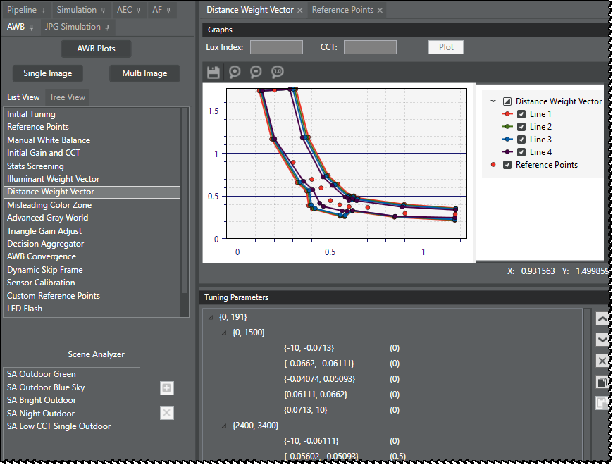

AWB processing collects gray stats for estimating the AWB gain. The gray stat literally indicates the stat inside a gray zone that empirically defines regions around the reference points and reference lines. Therefore, it is very important to select real gray stats in the given input stats.
The distance weight of a given stat is a probability of the stat; it represents how likely the stat is gray or not gray. This concept is based on observations that some stats are highly likely the gray stat with respect to their distance from the reference points and reference line. The distance from the reference point is the probablility of the grayness of a stat.
AWB distance-based weight assignment builds a flexible gray zone that is defined by the distance weight itself. The distance with zero (0) weight represents a boundary of the gray zone. Distance weight assignment allows the gray zone to extend outward to form a buffer zone with very low distance weight ( ≤0.01). The buffer gray zone makes the AWB decisions in consecutive frames as consistent as possible when stats cross either side of the gray zone boundary in frame-by-frame.
AWB measures the minimum distance from the stat to the reference line as the Euclidean distance between an input stat and an intersection point between the reference line and a perpendicular line passing through the input stat.

Distance weight vectors are configured in a three-level triggering system. As
shown in the following image, the Chromatix tool user interface presents the first
trigger (lux level), the second trigger (CCT), and the third trigger (distance) in the
first three columns. The last column is the core data (weight) for a given lux
level/CCT/distance trigger range. The table is defined during the AWB autotuning process
based on the user-entered Indoor Lux Index and Max Lux Index and the images
uploaded.

Given a lux index, the stats filter automatically computes the corresponding 2-D weight vector with respect to CCT and distance. Each stat has a distance to the reference line and CCT. Using the 2-D weight vector, the final weight is computed with respect to the CCT and distance of the input stat.
The distance weight vector module follows the common AWB trigger system that provides for interpolation of weight values that fall outside or between the defined trigger ranges.